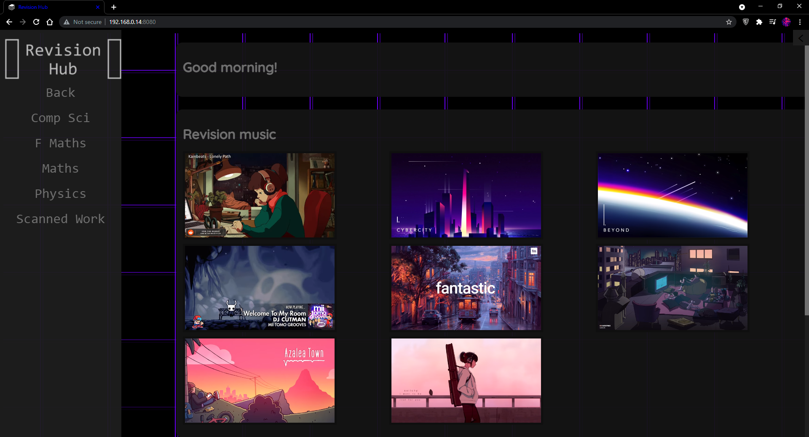

I made RevisionHub in preperation for my education at sixth form.
As you might have noticed, it is very similar to this website, but in fact, I designed RevisionHub before xandprojects.
It acts as a directory browser but presents my revision files in a more aestheticly pleasing than file explorer.
What's more, because I used PHP to write the website, I can easily traverse all my folders from a single index.php file!
This makes it brilliant because I don't need to add a new index file to each folder I want to navigate (unlike this website...)
However, RevisionHub is strictly for my own personal use, on a local server, because one could easily perform directory traversal
from the php file and access files outside of the RevisionHub "root" folder.
File types displayed include:
HTML, PNG (and other image file types), MP4 (and other video file types), PDF, TXT.
Other files types are listed with an option to copy their file path (so that I can GUI+R to open them quickly), but not displayed.
An example of the above file types shown on the website (including other file types, excluding HTML file types) is below:
HTML file types
Examples of these inside InfoBoxes (the box this text is in) are listed on the menu to the left.
Download: RevisionHub
I imagine, however, this file browser could be used for many more purposes than just revision ease.
If you want to use it for yourself, you will need to run a local php server in the directory of the index.php file, to do this I used php.exe.
Click the code below to download the PHP file (and include folder):